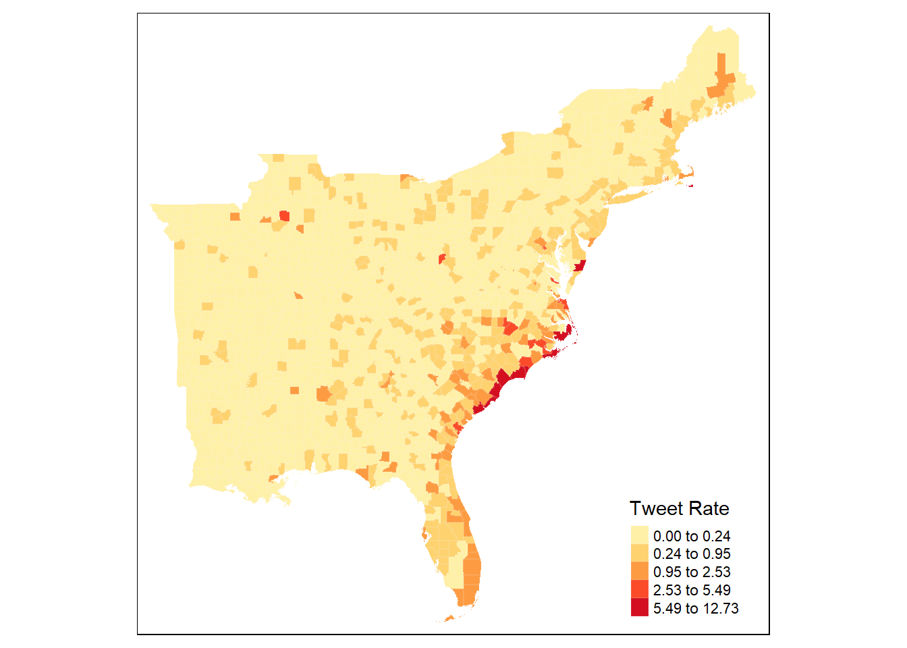
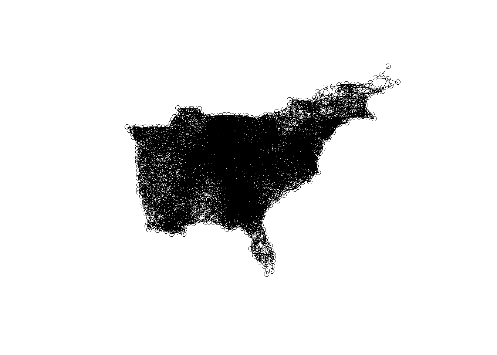
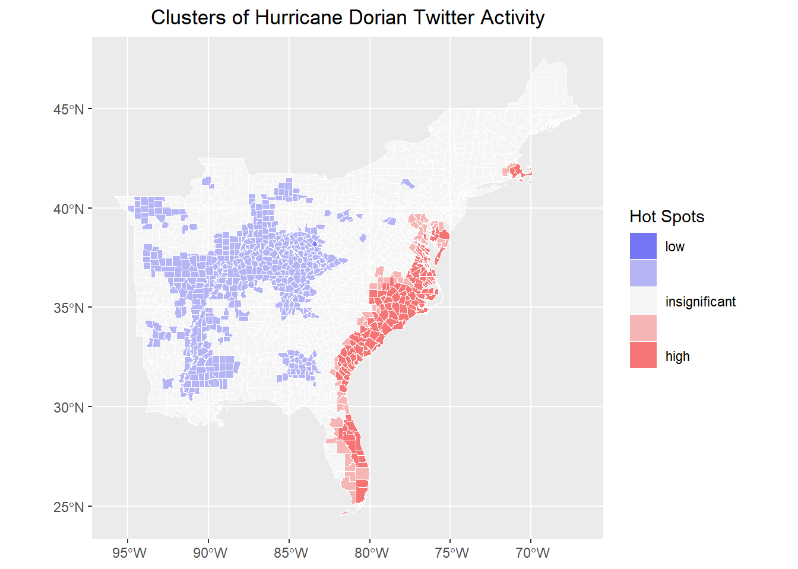
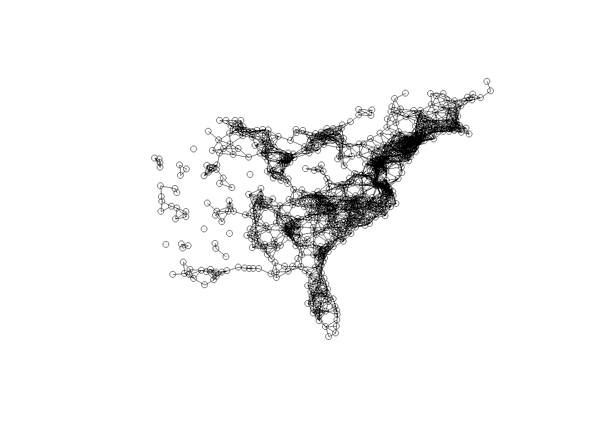
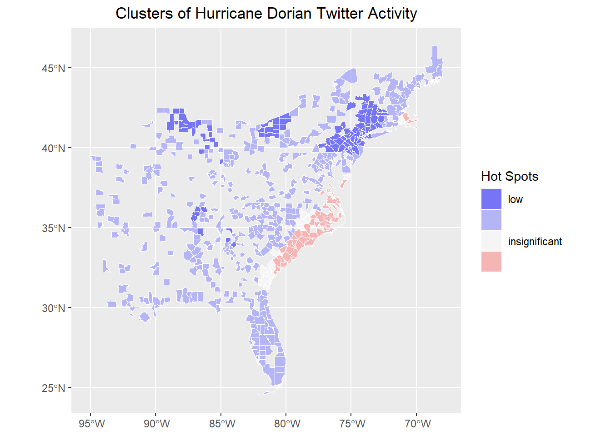

Chapter 13 Spatial Cluster Analysis
13.1 Advice for saving and loading data in R
At the end of the previous lesson, we output an RDS file of census counties with tweet counts joined.
In general, it makes sense to output a permanent copy of a data frame when:
- you first download, scrape or create the data, as an unedited original copy
- you process large or confidential data to the point when it can be shared
- you complete a lengthy processing task
- you reach a natural break in the analysis where it would be convenient to restart with or iterate with the data in a particular state
- you finish the study
An advantage of RDS files is that the data objects can be assigned any name as they are read in.
Here, we can just call them counties for convenience.
13.2 Load and map county-level tweet rate
Map tweet rate by county using tmap
tm_shape(counties) +
tm_polygons("tweet_rate",
border.col = "grey95",
border.alpha = 0.1,
palette = "YlOrRd",
n = 5,
style = "headtails",
title = "Tweet Rate") 
13.3 Create Spatial Weight Matrix
Use 110km Euclidean distance and include self in the weight matrix
county_coords <- counties %>%
st_centroid() %>% # convert polygons to centroid points
st_coordinates() # convert to simple x,y coordinates to play with stdep
thresdist <- county_coords %>%
dnearneigh(0, 110, longlat = TRUE) %>% # use geodesic distance of 110km
# distance should be long enough for every feature to have >= one neighbor
include.self() # include a county in its own neighborhood (for G*)
thresdist # view statistical summary of the nearest neighbors## Neighbour list object:
## Number of regions: 1705
## Number of nonzero links: 48795
## Percentage nonzero weights: 1.67852
## Average number of links: 28.61877Optionally, plot the spatial weight matrix results This should result in a very dense graph, because each county is connected to all other counties within 110 km.

13.4 Calculate Getis-Ord G* Statistic
# Create weight matrix from the neighbor objects
dwm <- nb2listw(thresdist, zero.policy = T)
######## Local G* Hotspot Analysis ########
# Get Ord G* statistic for hot and cold spots
counties$locG <- as.vector(localG(counties$tweet_rate,
listw = dwm,
zero.policy = TRUE
))
# may be same as:
# counties$dorrate %>% localG(listw = dwm, zero.policy = TRUE) %>% as.vector()
# check summary statistics of the local G score
summary(counties$locG)## Min. 1st Qu. Median Mean 3rd Qu. Max.
## -1.9221 -1.1916 -0.8742 -0.2236 -0.1173 13.951413.5 Map Hotpots
classify G scores by significance values typical of Z-scores where 1.15 is at the 0.125 confidence level, and 1.95 is at the 0.05 confidence level for two tailed z-scores based on Getis and Ord (1995) Doi: 10.1111/j.1538-4632.1992.tb00261.x to find other critical values, use the qnorm() function as shown here: https://methodenlehre.github.io/SGSCLM-R-course/statistical-distributions.html Getis Ord also suggest applying a Bonferroni correction
breaks and colors from http://michaelminn.net/tutorials/r-point-analysis/ based on 1.96 as the 95% confidence interval for z-scores if your results don’t have values in each of the 5 categories, you may need to change the values & labels accordingly.
What are significance levels and p-values? Read here: https://pro.arcgis.com/en/pro-app/latest/tool-reference/spatial-statistics/what-is-a-z-score-what-is-a-p-value.htm
Classify by significance levels
siglevel <- c(1.15, 1.95)
counties <- counties %>%
mutate(sig = cut(locG, c(
min(counties$locG),
siglevel[2] * -1,
siglevel[1] * -1,
siglevel[1],
siglevel[2],
max(counties$locG)
)))
rm(siglevel)Map results!
# map results!
ggplot() +
geom_sf(data = counties, aes(fill = sig), color = "white", lwd = 0.1) +
scale_fill_manual(
values = c("#0000FF80", "#8080FF80", "#FFFFFF80", "#FF808080", "#FF000080"),
labels = c("low", "", "insignificant", "", "high"),
aesthetics = "fill"
) +
guides(fill = guide_legend(title = "Hot Spots")) +
labs(title = "Clusters of Hurricane Dorian Twitter Activity") +
theme(
plot.title = element_text(hjust = 0.5),
axis.title.x = element_blank(),
axis.title.y = element_blank()
)
13.6 Remove counties with no tweets
Let’s experiment with this hotspot / cluster detection method a bit, by retesting for hotspots after removing counties with no twitter activity at all.
Recreate the spatial weights matrix
county_coords <- countiesNo0 %>%
st_centroid() %>% # convert polygons to centroid points
st_coordinates() # convert to simple x,y coordinates to play with stdep
thresdist <- county_coords %>%
dnearneigh(0, 110, longlat = TRUE) %>% # use geodesic distance of 110km
# distance should be long enough for every feature to have >= one neighbor
include.self() # include a county in its own neighborhood (for G*)
thresdist # view statistical summary of the nearest neighbors## Neighbour list object:
## Number of regions: 601
## Number of nonzero links: 7757
## Percentage nonzero weights: 2.147558
## Average number of links: 12.90682
## 11 disjoint connected subgraphsRe-plot the spatial weights matrix

Re-calculate the local Getis-Ord G* Statistic
dwm <- nb2listw(thresdist, zero.policy = T)
countiesNo0$locG <- as.vector(localG(countiesNo0$tweet_rate,
listw = dwm,
zero.policy = TRUE
))
summary(counties$locG)## Min. 1st Qu. Median Mean 3rd Qu. Max.
## -1.9221 -1.1916 -0.8742 -0.2236 -0.1173 13.9514siglevel <- c(1.15, 1.95)
countiesNo0 <- countiesNo0 |>
mutate(sig = cut(locG, c(
min(counties$locG),
siglevel[2] * -1,
siglevel[1] * -1,
siglevel[1],
siglevel[2],
max(countiesNo0$locG)
)))
rm(siglevel)And, re-map the hotspots.
# map results!
ggplot() +
geom_sf(data = countiesNo0, aes(fill = sig), color = "white", lwd = 0.1) +
scale_fill_manual(
values = c("#0000FF80", "#8080FF80", "#FFFFFF80", "#FF808080", "#FF000080"),
labels = c("low", "", "insignificant", "", "high"),
aesthetics = "fill"
) +
guides(fill = guide_legend(title = "Hot Spots")) +
labs(title = "Clusters of Hurricane Dorian Twitter Activity") +
theme(
plot.title = element_text(hjust = 0.5),
axis.title.x = element_blank(),
axis.title.y = element_blank()
)
As we can see, removing the large number of counties with no tweet activity changes the global average of the tweet rate. Therefore, neighborhoods must exhibit a higher threshold of twitter activity to be considered significant, reducing the overall geographic extent of the hotspots. The cold spots also shift. Whereas they were concentrated in areas with no twitter activity at all, they are now centered on areas with low but non-zero twitter activity.